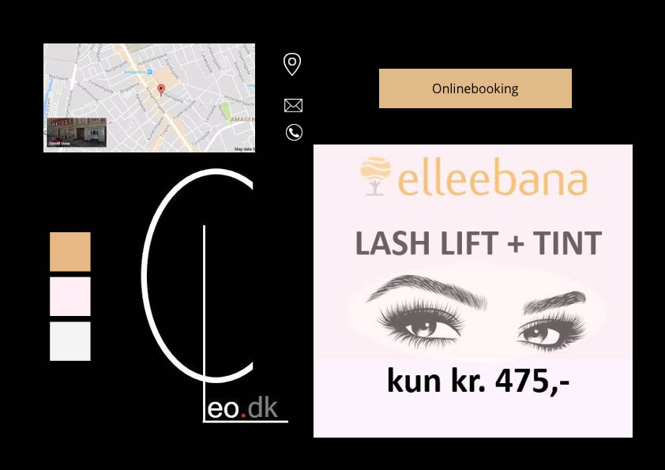

Redesign og temadokumentation
I denne opgave skulle vi redesigne en hjemmeside for en virksomhed. Vi blev inddelt i grupper og skulle selv finde en virksomhed, der ville medvirke til projektet. Hjemmesiden skulle selvfølgelig passe til virksomheden, dvs. den skulle indeholde tekst der var relevant for virksomheden, desuden skulle den indeholde video og billedmateriale som vi selv skulle producere i samspil med virksomheden. I forhold til udtrykket på hjemmesiden skulle virksomhedens vision og ønskede målgruppe identificeres så udtrykket på hjemmesiden både passede til virksomhedens personlighed og appellerede til målgruppen.
Vi blev introduceret til flere forskellige tests som vi både skulle lave i den indledende analyse og i forhold til vores afsluttende produkt.
Forarbejde
Det første vi skulle gøre, var at finde en virksomhed at arbejde med. Vi endte med at arbejde med frisør Cleo. Så snart vi kendte vores virksomhed begyndte det indledende arbejde, hvilket bestod i at analysere den eksisterende hjemmeside og se hvordan virksomheden fremstår på nuværende tidspunkt.
For at analysere hjemmesiden udførte vi først en 5 sekunders test for at se hvordan hjemmesiden fremstår ved første øjekast. Her så vi hurtigt at siden var meget mørk.
Vi skulle desuden udføre en BERT test det er denne type test der kan give et godt indblik i hvordan den nuværende hjemmeside virker på folk sammenlignet med hvordan man ønsker den skal virke. Her fandt vi at hjemmesidens mørke og lidt roede udseende ikke stemte overens med de ting vi kunne læse på hjemmesiden og professionalitet, venlighed og miljøbevidsthed.
Billeder
Vi var ude hos virksomheden og fotografere, selvom det er en lille salon, var der mange ting vi kunne afbillede. Bl.a. virksomhedens produkter, der er specielle i forhold til at de er bedre for miljøet og ikke indeholder farlig kemi. Vi fokuserede meget på at billederne skulle vise den hyggelige og imødekommende side af virksomheden, da det var det virksomheden gerne selv ville lægge vægt på.
Hjemmefra havde vi lavet en liste med mulige motiver vi gerne ville fotografere hos virksomheden. Alle billederne blev taget i både høj- og bredformat, da det er til at vide på forhånd hvordan de skal placeres på hjemmesiden.
Vi havde dog nogle udfordringer med billederne, da salonen ligger i en kælder er det begrænset hvor meget naturligt lys man får ind, desuden var lamperne i salonen meget gule, hvilket selvfølgelig gav gule billeder. Disse ting fiksede vi med color gradient da vi redigerede billederne i photoshop. Alle billederne er taget som RAW-billeder, da man her gemmer al information, hvilket er rigtig godt når billederne senere skal redigeres.


Video
Til hjemmesiden skulle der produceres en video om virksomheden, vores video er lavet som promotion video for virksomheden, hvor vi både ønsker at sætte fokus på den søde og imødekommende ejer, men også vil vise hvordan virksomheden skiller sig ud, da det er en af meget få frisørsaloner, der slet ikke benytter skadelig kemi. Vi havde på forhånd lavet en interviewguide så vi var sikre på at komme rundt om de vigtige emner, men opmuntrede selvfølgelig interviewpersonen til at komme med yderligere ting, da hun jo kender sin virksomhed bedst.
I forhold til det tekniske optog vi lyden separat på knappenålsmikrofon for at få så god en lyd som muligt. Det var meget heldigt da kameraet på dagen valgte ikke at optage lyd. At der var ikke var lyd fra kameraet gjorde det utrolig vanskeligt at synkronisere videoen med lyden fra mikrofonen, men det lykkedes til sidst. Desuden havde vi de samme lysudfordringer på videoen som på billederne, men disse kunne igen klares med color-gradient.
Hjemmeside
Hjemmesiden er opbygget som en onepager med integrerede knapper, da der kun var behov for to knapper på siden, en til priser og en til booking, fungerede det bedre at integrerer dem i indholdet end at lave en særskilt navmenu.
Vi har ikke tilføjet meget skriftligt indhold til siden da virksomheden i forvejen havde en god beskrivelse, der satte fokus på de vigtigste ting, vi har dog tilføjet et personaleafsnit med billeder af medarbejderne. Ellers handlede det for os mest om at sætte tingene op på en måde der fanger brugerrens opmærksomhed og stadig er let og overskueligt at navigere.
På siden er der desuden sat et galleri ind, hvor man hurtigt bliver præsenteret for den hyggelige atmosfære i forretningen. Desuden har vi selvfølgelig vores video, vi havde dog problemer med vores video, der ikke ændre sig responsivt sammen med resten af siden.
Link til dokumentationssite